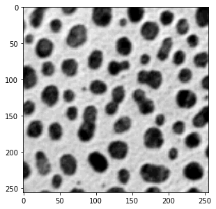
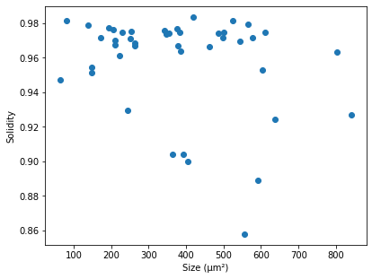

Measurement
Contents
dip.MeasurementTool can measure quite a lot of features for objects in an image, see dip::MeasurementTool
for a full list. To demonstrate, we’ll start with a simple example image that we can measure: the ‘cermet’ image.
Because the file doesn’t have pixel size information embedded, we’ll invent a pixel size. The pixel size is
attached to the image, and taken into account by many functions in the DIPlib library. dip.MeasurementTool
reports measurements in physical units instead of pixels if the image has pixel size information.
Note that pixels do not need to be isotropic, it is possible to give a different pixel size for each dimension.
gray = dip.ImageReadICS('examples/cermet.ics') gray.SetPixelSize(1, "um") # "um" is easier to type than "μm", but they mean the same thing gray.Show()

Next, we threshold and label the image, then measure some basic features. Because ‘Solidity’ depends on the ‘ConvexArea’ measurement, we get that one too in the output.
bin_img = gray < 120 label = dip.Label(bin_img, minSize=30) label = dip.EdgeObjectsRemove(label) measurement = dip.MeasurementTool.Measure(label, gray, ['Size', 'Solidity', 'Statistics']) print(measurement)
| Size | Solidity | Statistics | ConvexArea | -- | ---------- | ---------- | ----------------------------------------------------- | ---------- | | | | Mean | StdDev | Skewness | ExcessKurtosis | | | (μm²) | | | | | | (μm²) | -- | ---------- | ---------- | ---------- | ---------- | ---------- | -------------- | ---------- | 6 | 262.0 | 0.9668 | 45.34 | 30.82 | 0.7216 | -0.6831 | 271.0 | 7 | 63.00 | 0.9474 | 86.35 | 13.41 | 0.2313 | -0.5471 | 66.50 | 8 | 243.0 | 0.9293 | 75.09 | 21.16 | 0.1711 | -0.9723 | 261.5 | 9 | 209.0 | 0.9698 | 61.63 | 25.80 | 0.3937 | -0.7994 | 215.5 | 10 | 462.0 | 0.9665 | 62.10 | 20.27 | 0.7329 | 0.1613 | 478.0 | 11 | 611.0 | 0.9745 | 81.17 | 17.92 | -0.3812 | -0.2219 | 627.0 | 12 | 80.00 | 0.9816 | 83.10 | 15.72 | 0.1468 | -0.7721 | 81.50 | 13 | 205.0 | 0.9762 | 52.92 | 32.19 | 0.1556 | -1.183 | 210.0 | 14 | 419.0 | 0.9836 | 41.60 | 30.24 | 0.8653 | -0.3741 | 426.0 | 15 | 363.0 | 0.9041 | 71.56 | 22.25 | -0.2541 | -0.5946 | 401.5 | 16 | 487.0 | 0.9740 | 57.81 | 25.17 | 0.05945 | -0.4846 | 500.0 | 17 | 383.0 | 0.9746 | 53.10 | 24.60 | 0.6360 | -0.3009 | 393.0 | 18 | 250.0 | 0.9709 | 50.21 | 30.08 | 0.6251 | -0.8159 | 257.5 | 20 | 137.0 | 0.9786 | 64.47 | 22.41 | 0.5215 | -0.8983 | 140.0 | 21 | 378.0 | 0.9668 | 64.85 | 21.35 | 0.3866 | -0.5561 | 391.0 | 22 | 392.0 | 0.9043 | 48.06 | 31.20 | 0.4776 | -0.8514 | 433.5 | 23 | 230.0 | 0.9746 | 70.43 | 23.68 | -0.2813 | -0.6269 | 236.0 | 25 | 262.0 | 0.9686 | 62.26 | 25.31 | 0.3051 | -0.7452 | 270.5 | 26 | 637.0 | 0.9245 | 52.94 | 23.86 | 0.8441 | -0.08530 | 689.0 | 28 | 341.0 | 0.9757 | 54.94 | 25.06 | 0.8843 | -0.3705 | 349.5 | 29 | 501.0 | 0.9747 | 51.85 | 24.15 | 0.9221 | -0.05920 | 514.0 | 30 | 556.0 | 0.8580 | 60.65 | 22.53 | 0.5287 | -0.3121 | 648.0 | 31 | 592.0 | 0.8889 | 58.28 | 29.00 | 0.1195 | -1.026 | 666.0 | 32 | 172.0 | 0.9718 | 68.47 | 23.14 | 0.3064 | -0.9392 | 177.0 | 33 | 566.0 | 0.9792 | 41.71 | 30.85 | 0.7348 | -0.5709 | 578.0 | 35 | 842.0 | 0.9268 | 53.14 | 26.75 | 0.1291 | -0.4931 | 908.5 | 37 | 209.0 | 0.9676 | 56.00 | 26.01 | 0.5350 | -0.8241 | 216.0 | 38 | 147.0 | 0.9545 | 65.14 | 24.51 | 0.3733 | -0.9707 | 154.0 | 39 | 375.0 | 0.9766 | 71.89 | 21.69 | 0.06353 | -0.7623 | 384.0 | 40 | 385.0 | 0.9637 | 51.05 | 27.73 | 0.6729 | -0.5471 | 399.5 | 41 | 223.0 | 0.9612 | 63.78 | 25.31 | 0.1825 | -0.4636 | 232.0 | 42 | 347.0 | 0.9734 | 55.33 | 26.30 | 0.5900 | -0.7111 | 356.5 | 43 | 604.0 | 0.9527 | 50.44 | 26.84 | 0.6709 | -0.5829 | 634.0 | 44 | 354.0 | 0.9739 | 42.53 | 33.74 | 0.6403 | -0.9280 | 363.5 | 45 | 543.0 | 0.9696 | 50.64 | 24.14 | 1.068 | 0.3071 | 560.0 | 47 | 147.0 | 0.9515 | 67.05 | 22.61 | 0.2393 | -0.5154 | 154.5 | 48 | 405.0 | 0.9000 | 83.24 | 23.60 | -0.9721 | 0.0003058 | 450.0 | 49 | 577.0 | 0.9714 | 30.64 | 31.71 | 1.246 | 0.2249 | 594.0 | 50 | 497.0 | 0.9717 | 61.73 | 18.86 | 1.101 | 0.3655 | 511.5 | 52 | 525.0 | 0.9813 | 34.06 | 31.89 | 1.047 | -0.1825 | 535.0 | 53 | 803.0 | 0.9634 | 54.23 | 25.55 | 0.4471 | -0.5974 | 833.5 | 54 | 253.0 | 0.9750 | 59.83 | 25.32 | 0.4961 | -0.8077 | 259.5 | 55 | 193.0 | 0.9772 | 65.91 | 23.49 | 0.4554 | -0.8702 | 197.5 |
Information about the measurement object
The leftmost column of the table above shows the object IDs (labels) of the measured objects. This list can
be obtained with measurement.Objects(). Note that dip.EdgeObjectsRemove removed some labeled objects,
those labels are not in the list.
The column group headers (features), and some information about them, can be obtained with measurement.Features(),
which returns a list that tells us the name and the number of columns for each feature.
measurement.Values() also returns a list, but it has an element for each column (not column group), and
tells us the name of the value (only for multi-value features) and the units that the value is in.
To query the size of the measurement object, use measurement.NumberOfObjects() (which is the same as
len(measurement)), measurement.NumberOfFeatures() and measurement.NumberOfValues(). One can query
if a specific feature was measured with measurement.FeatureExists(), and if a specific objects was
measured with measurement.ObjectExists().
Indexing into the measurement object
The dip.Measurement object measurement can be indexed in three levels: the measurement name (‘Statistics’),
the object number (30), and the measurement value within the selected measurement (2):
measurement['Statistics'][30] # returns a list with the four statistics values measurement['Statistics'][30][2] # returns a float measurement[30]['Statistics'][2] # identical to the above, the order of the two first indices is irrelevant
Leaving out one of the indices returns the full row or column:
row = measurement[30] col = measurement['Solidity']
These objects can be used in many different ways. Both have the same methods as the measurement
object has, or rather the subset that makes sense: For the column we can query about objects:
col.Objects(), col.NumberOfObjects() and col.ObjectExists(). For the row we can query about
features and values: row.Features(), row.Values(), row.NumberOfFeatures(), row.NumberOfValues()
and row.FeatureExists().
Additionally, we have row.ObjectID() and col.FeatureName() to find out which row and which column
is indexed.
These objects also mimic the functionality of a dictionary: they both have a keys() method,
a values() method, and an items() method. These methods do copy the data, so they are less efficient
to use. But they can be very useful. Additionally, iter() and len() have been overloaded. This
means that one can iterate over a row or column:
t = 0 for s in col: t += s[0] for s in row: print(s)
As we’ll see below, there are also some functions that take a column of measurements as input.
Because a feature can have multiple values, something like measurement['Statistics'] doesn’t
represent a single value per object. The Subset() method can be used to select a single
column. It modifies the object to be a single value:
col = measurement['Statistics'] col.Subset(1) col.Values() # Shows that we only have one column, the 'StdDev' one.
Statistics on measurements
There exist various statistics functions that can be applied to a measurement column:
dip.Maximum(measurement['Solidity']) # the largest solidity value dip.MaximumObject(measurement['Solidity']) # the object ID for the largest solidity value dip.SampleStatistics(measurement['Solidity'])
These functions all return the statistics for the first column in the column group, use
Subset() (see above) to select which column to apply the statistics to.
See under “related” on this page for a full list of functions available.
Because a measurement column object is accepted as input by NumPy functions, there are many other statistics that can be applied (see Converting measurements to a NumPy array).
Selecting measurement rows
Comparison operators applied to a colum produce a dip.LabelMap object. This
is an object that can be used to index into a measurement object to select rows. For example,
to select all the objects over 600 μm²:
selection = measurement['Size'] > 600 large_objects = measurement[selection] large_objects.NumberOfObjects() # equal to 5
selection.Count() is also 5.
The operation is always applied to the first value of a multi-valued feature. Use Subset()
as discussed above to select which value to apply the operation to.
One can combine multiple LabelMap objects together using element-wise Boolean operators &, | and ^.
Also the unary element-wise negation operator ~ can be used. But be aware of the precendence
of these operators in Python
In this LabelMap object, each label (object ID) is mapped to a new value.
Those labels mapped to 0 are the rows that will be removed when the mapping is applied to a measurement
object (which we did with measurement[selection]). The other labels all map to themselves by default.
One can use indexing to examine and update the mapping.
For example:
large_objects.Objects() # is [11, 26, 35, 43, 53] selection[11] = 1 selection[26] = 0 large_objects = measurement[selection] large_objects.Objects() # is [1, 35, 43, 53]
We re-labeled object 11 as 1, and we explicitly deselected object number 26.
selection.Relabel() causes the selected rows to be relabeled with contiguous labels starting at 1:
selection.Relabel() large_objects = measurement[selection] large_objects.Objects() # is [1, 2, 3, 4]
Applying the LabelMap to the label image that the measurement was taken from is a simple way to
select objects with specific properties:
selection = measurement['Size'] > 600 selection.Relabel() # optional large_object_image = selection.Apply(label) large_object_image.Show('labels')

Converting measurements to a NumPy array
The measurement object can be converted to a NumPy array, which will have the same
layout as the measurement object as shown by print(). This array will share data
with the measurement object, modifying it will modify the measurement object.
array = np.asarray(measurement) array[0, 0] = 0 measurement['Size'][6] # will print [0.0]
Also a partially-indexed measurement object can be converted to a NumPy array, again sharing data:
np.asarray(measurement[30]) # returns a 2D NumPy array for a single row of the measurement table np.asarray(measurement['Solidity']) # returns a 2D NumPy array for a column group
But note that it is not always necessary to explicitly convert to a NumPy array, one can directly call NumPy functions on these objects:
np.max(measurement['Solidity'])
Casting to an array might be useful to call a function that expects its input to have
a shape property.
Other ways to use measurements
We can paint the objects with one of the measurements, which can be useful for display:
solidity = dip.ObjectToMeasurement(label, measurement['Solidity']) solidity.Show(colormap='viridis')
Casted to a NumPy array, measurement columns can be the input to plotting functions. Here we plot size vs solidity:
import matplotlib.pyplot as plt plt.scatter(np.asarray(measurement['Size']), np.asarray(measurement['Solidity'])) plt.xlabel('Size (μm²)') plt.ylabel('Solidity')

If you use Pandas, you can convert the measurement object to a Data Frame:
df = measurement.ToDataFrame() print(df)
Size Solidity Statistics, Mean Statistics, StdDev Statistics, Skewness Statistics, ExcessKurtosis ConvexArea 6 0.0 0.966790 45.343511 30.821640 0.721578 -0.683085 271.0 7 63.0 0.947368 86.349206 13.414194 0.231313 -0.547051 66.5 8 243.0 0.929254 75.094650 21.163748 0.171140 -0.972349 261.5 9 209.0 0.969838 61.626794 25.801656 0.393697 -0.799403 215.5 10 462.0 0.966527 62.095238 20.270824 0.732851 0.161275 478.0 11 611.0 0.974482 81.165303 17.923805 -0.381249 -0.221944 627.0 12 80.0 0.981595 83.100000 15.718730 0.146845 -0.772090 81.5 <snip>
As you can see, column names for multi-valued features are generated that combine the feature
name and the value name, such as df["Statistics, Mean"].
Finally, the function dip.MeasurementWriteCSV() can be used to write a complete
measurement object to a CSV file, again including the object IDs and header information.